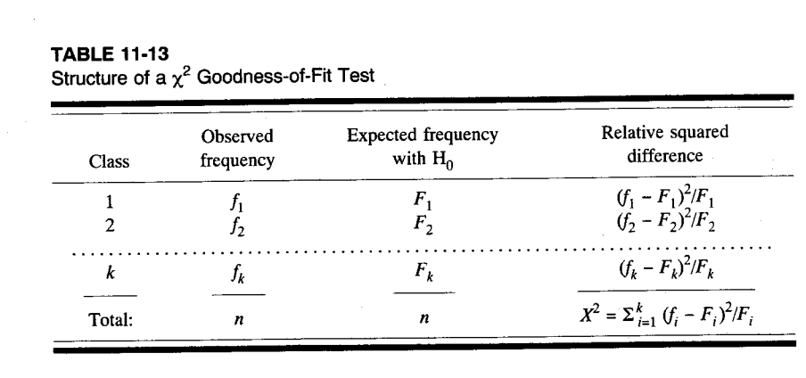
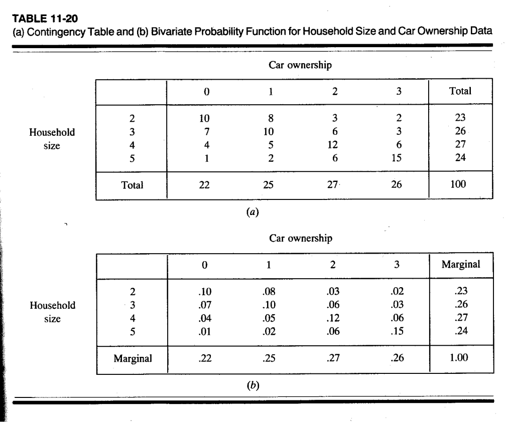
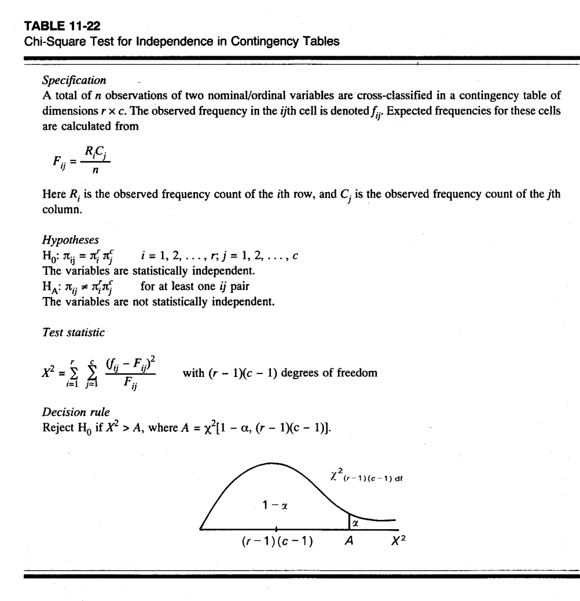

chi.results <- chisq.test(c(20, 29, 35, 16), p = c(0.25, 0.25, 0.25, 0.25))
chi.resultsChapter 10: Non-Parametric Statistics and Chi-Square Tests
1 Non-Parametric Statistics
1.1 Introduction
Parametric statistics makes statements about population parameters, that come from well-specified population distributions, such as \(\mu\), \(\pi\) or \(\sigma^2\)
The estimators \(\bar{X}\), \(P\), or \(s^2\), their associated standard errors, sampling distributions (or asymptotic sampling distributions based on the central limit theorem) are used to develop the critical regions, calculate confidence intervals, \(p\)-values (significance or PROB-values) etc.
Non-parametric and/or distribution free statistical tests do not use as stringent assumptions about the underlying population distribution and therefore ignore population parameters.
1.2 When to Use Non-Parametric Methods?
The sample sizes are fairly small so that the central limit theorem is not applicable.
If the distribution of the population is unknown and/or assumptions about it are not reasonable.
Note: There are tests based on sample observations to check if the underlying population follows a particular parametric distribution (e.g., Chi-square goodness-of-fit test or the Kolmogorov-Smirnov test).
If the random variables are qualitative, i.e., measured on the nominal or ordinal scale.
Exception: We know about the exact binomial tests for nominal scaled observations.
- For many parametric tests there are equivalent tests in the non-parametric domain (see BBR Chapter 10)
1.3 Comparison of Parametric and Non-parametric Tests
If the underlying parametric assumptions are satisfied and quality data are available, parametric tests are superior.
The actual \(\alpha\)-error of non-parametric tests may be smaller by an unknown quantity if the underlying parametric assumptions are satisfied.
That is, non-parametric tests may be conservative, because they reject the \(H_0\) at a nominal error level substantially less frequently than their parametric counterparts.
The likelihood of committing a \(\beta\)-error (not rejecting \(H_0\) even though it is incorrect) is smaller for parametric tests if the parametric assumptions are satisfied.
1.4 Scope of Application
Due to the robustness of non-parametric tests they can be applied to a broader range of underlying populations and measurement scales.
Remember we always can transform variables on a higher-level measurement scale to variables on a lower order (e.g., interval to ordinal scale).
1.5 Sample Size Considerations
For small sample sizes \(n\) we cannot apply the central limit theorem, when the underlying distribution assumptions are violated.
For small sample sizes \(n\), non-parametric test statistics have the advantage that their sampling distribution under the null hypothesis can be derived using combinatorial arguments. See, for instance, the Mann-Whitney test pp 385-390.
For larger sample sizes \(n\), non-parametric tests frequently make use of:
- [a] an assumed distribution of the observations, which is different from the normal distribution, and/or
- [b] a normal approximation by calculating the expected value \(E(T|H_0)\) and standard error \(\sqrt{Var(T|H_0)}\) of the test statistics \(T\) assuming the null hypothesis is true
For non-parametric test statistics with an underlying discrete distribution, we will not be able to exhaust the nominal significance level \(\alpha\) exactly (remember exact binomial test), and we will rather make use of the discrete PROB-values.
2 Goodness-of-Fit Tests
2.1 Overview
Statistical tests often assume that the underlying population follows a particular distribution, like the normal distribution for most parametric test.
Statistical Goodness-of-Fit tests check whether the sample observations have been sampled from a hypothetical population.
2.2 The Chi-Square Test
2.2.1 Data Transformation
Depending on the measurement scale of the random variable a transformation needs to be applied:
If the underlying distribution is continuous, then it needs to be re-scaled into the ordinal scale by building a mutually exclusive and disjunctive partition (class intervals) of the underlying support of the random variable \(X\).
If the underlying distribution is discrete one can work with the classified data immediately.
2.2.2 Basic Concept
The underlying idea is to count the number of sample observations \(f_i\) (observed frequencies) of the random variable \(X\) within the class intervals \(i \in \{1, \ldots, k\}\).
Note: At least two classes are needed to perform the test.
2.2.3 Expected Frequencies
Assuming that the hypothetical population follows a particular distribution, the expected counts within each class are calculated using the cumulative distribution function:
\[F_i = n \cdot (F(\text{upper bound of class } i) - F(\text{lower bound of class } i))\]
Important: For the \(\chi^2\)-test the expected count has to be \(F_i \geq 5\). Should the expected count be below 5, then consecutive classes need to be pooled together.
Both sets of counts are then compared within the classes.
2.2.4 Structure of the Goodness-of-Fit Test

2.2.5 The Test Statistic
The test statistic is:
\[\chi^2 = \sum_{i=1}^{k} z_i^2 \quad \text{with} \quad z_i^2 = \frac{(f_i - F_i)^2}{F_i}\]
2.2.6 Poisson Distribution Foundation
- The individual counts follow under \(H_0\) a Poisson distribution:
\[f_i \sim Poisson(F_i)\]
The Poisson distribution has the expectation \(E(f_i) = F_i\) and the variance \(Var(f_i) = F_i\).
Therefore, \(z_i = \frac{f_i - E(f_i)}{\sqrt{Var(f_i)}}\) follows approximately a standard normal distribution.
On average this approximation works well for a Poisson distribution if \(E(f_i) \geq 5\).
Squaring a standard normal distributed variable \(z_i\) makes it a \(\chi^2\)-distributed variable with one degree of freedom, that is, \(z_i^2 \sim \chi^2_{df=1}\).
The sum of \(\chi^2\)-distributed random variables is again \(\chi^2\)-distributed. The sum’s degrees of freedom become the sum of the individual degrees of freedom.
2.2.7 Degrees of Freedom
The total degrees of freedom over all class intervals are equal to:
\[df = \underbrace{k}_{\text{# of classes}} - \underbrace{\text{# of estimated parameters}}_{\text{2 for } \bar{X} \text{ and } s^2 \text{ of the normal distribution}} - \underbrace{1}_{\text{for the constraint } n = \sum_{i=1}^{k} f_i = \sum_{i=1}^{k} F_i}\]
Several degrees of freedom are lost due to: 1. The use of estimated parameters based on the sample observations to calibrate the hypothetical distribution 2. The constraint that the overall sample size \(N\) and expected counts need to be equal
2.2.8 Formal Definition

Background:
The \(\chi^2\) test is used to check if a sample distribution agrees with a theoretical probability distribution. The underlying random variable can be measured at the nominal level or higher. The sample consists of \(n\) observations distributed over \(k\) categories. Each category has \(O_j\) observations, thus \(\sum O_j = n\). The theoretical distribution is used to generate expected frequencies for each category in the sample. For example, in testing a sample against the uniform distribution, each sample category would have the same expected frequency, equal to the sample size divided by the number of categories. The expected count for each category is denoted \(E_j\). The test is based on the differences between \(O_j\) and \(E_j\). For this test to be reliable, all \(E_j\) should exceed 2, and 80% of the \(E_j\) should exceed 5.
Hypotheses:
Letting \(Y\) be the random variable, and \(f(Y)\) be the theoretical probability distribution of \(Y\), the null and alternative hypotheses are:
- \(H_0\): The sample was drawn from a population \(f(Y)\)
- \(H_A\): The sample was drawn from some distribution other than \(f(Y)\)
Test statistic:
Under \(H_0\) the following has an approximate \(\chi^2\) distribution:
\[X^2 = \sum_{j=1}^{k} \frac{(O_j - E_j)^2}{E_j}\]
with degrees of freedom \(df = k - m - 1\) where \(m\) is the number of parameters in \(f(Y)\) estimated from the sample.
Decision rule:
- \(H_0\) is rejected when \(PV < \alpha\), and we conclude that the sample did not arise from the distribution \(f(Y)\).
- Otherwise (if \(PV \geq \alpha\)), we fail to reject \(H_0\) and draw no conclusion about the underlying population.
2.3 Example in R
The test can be set up in R by using the probabilities of each class using the reference distribution.
For instance, if we have 4 classes and assume a uniform distribution, then the theoretical probabilities become \(\pi_1 = 0.25\), \(\pi_2 = 0.25\), \(\pi_3 = 0.25\) and \(\pi_4 = 0.25\).
Output:
Chi-squared test for given probabilities
data: c(20, 29, 35, 16)
X-squared = 8.88, df = 3, p-value = 0.03093chi.results$expectedOutput:
[1] 25 25 25 252.3.1 Important Notes
The expected frequencies need to be checked for the low count condition.
In this case the degrees of freedom are correct but in other situations they need to be reduced by the number of parameters which were estimated from the data to obtain the theoretical distribution.
The theoretical probabilities need to sum to one.
Explore the online help for the function
chisq.test().
3 Contingency Tables
3.1 Overview
Contingency tables are a cross-tabulation of two (or more) nominal or ordinal scaled variables.
Row and column sums represent the univariate sample frequency distributions of the variables \(X_1\) and \(X_2\),
whereas the cell counts \(X_{ij}\) denote the sample frequency of the joint occurrences of the events \(X_1 = i \cap X_2 = j\)
3.1.1 Example: Household Size vs Car Ownership

3.2 Testing for Independence
Contingency tables allow testing the null hypothesis whether two nominal or ordinal scaled variables are jointly statistically independent of each other
against the alternative hypothesis that they are statistically related with each other.
3.2.1 Statistical Independence
Recall the concept of statistical independence:
\[\Pr(X_1 = i \cap X_2 = j) = \Pr(X_1 = i) \cdot \Pr(X_2 = j)\]
3.2.2 Hypotheses
Therefore, the null and alternative hypotheses become:
\[H_0: \pi_{ij} = \pi_i^r \cdot \pi_j^c\]
against
\[H_A: \pi_{ij} \neq \pi_i^r \cdot \pi_j^c \quad \text{for at least one pair } (i, j)\]
3.3 Construction of the Test Statistic
3.3.1 Initial Approach
At first glance the underlying test statistic could center around the absolute difference between the observed proportion and the expected probabilities: \(|p_{ij} - \pi_{ij}|\).
Just small difference − due to sampling variations − would support the null hypothesis.
However, two issues need to be considered:
The expected probabilities need to be calculated from estimates of the marginal relative row and column frequencies:
\[\hat{\pi}_{ij} = \hat{\pi}_i^r \cdot \hat{\pi}_j^c \quad \text{with} \quad \hat{\pi}_i^r = p_i^r = x_{i+}/n \quad \text{and} \quad \hat{\pi}_j^c = p_j^c = x_{+j}/n\]
Just using the expected and observed probabilities ignores the sampling variability which depends on the sample size \(n\).
The distribution of \(|p_{ij} - \pi_{ij}|\) is unknown and cannot be approximated by the standard normal distribution.
3.3.2 Using Counts Instead of Probabilities
For these reasons the test statistics are expressed in terms of observed and expected counts (i.e., frequencies) rather than probabilities:
\[E(X_{ij} | H_0) = n \cdot \hat{\pi}_{ij} = n \cdot p_i^r \cdot p_j^c\]
\[= n \cdot \frac{\sum_{j=1}^{J} x_{ij}}{n} \cdot \frac{\sum_{i=1}^{I} x_{ij}}{n} = \frac{\sum_{j=1}^{J} x_{ij} \cdot \sum_{i=1}^{I} x_{ij}}{n}\]
\[= \frac{x_{i+} \cdot x_{+j}}{n}\]
3.3.3 Poisson Distribution for Cell Counts
\(X_{ij}\) are counts and thus again can be assumed to follow a Poisson distribution:
\[X_{ij} \sim Poisson(n \cdot \pi_{ij})\]
with \(n \cdot \pi_{ij} = E(X_{ij} | H_0) = Var(X_{ij} | H_0)\) (because the expectation and variance of a Poisson distribution are identical)
3.3.4 The Chi-Square Statistic
Summing the squared and standardized differences between the observed and expected frequencies (i.e., squared z-transformed variables) leads to the \(\chi^2\)-statistic:
\[\chi^2 = \sum_{i=1}^{I} \sum_{j=1}^{J} \frac{\left[X_{ij} - E(X_{ij} | H_0)\right]^2}{Var(X_{ij} | H_0)} = \sum_{i=1}^{I} \sum_{j=1}^{J} \frac{\left[X_{ij} - E(X_{ij} | H_0)\right]^2}{E(X_{ij} | H_0)}\]
3.3.5 Degrees of Freedom
In total there are \(I \times J\) cells in a contingency table. However, since the expected cell frequencies are estimated from the row and column sums minus the double counting of the sample size \(n\), in total \((I + J - 1)\) degrees of freedom are lost.
\[df = I \times J - (I + J - 1) = (I - 1) \times (J - 1)\]
Consequently, once we know the \((I - 1)\) row sums and \((J - 1)\) column sums as well as the total sum \(n\), only \((I - 1) \times (J - 1)\) expected cell counts can vary freely.
3.3.6 Minimum Expected Cell Counts
Approximating summands \(\frac{\left[X_{ij} - E(X_{ij} | H_0)\right]^2}{Var(X_{ij} | H_0)}\) by the \(\chi^2\)-distribution is only feasible if \(E(X_{ij} | H_0) \geq 5\) for almost all cells.
Just a few cells are allowed to have an expectation \(E(X_{ij} | H_0) \geq 2\).
Note: Other books quote different minimum expected counts.
3.3.7 When Minimum Count Rules Are Not Satisfied
Should the minimum count rules not be satisfied then:
One could switch to an exact test based on the multi-nominal distribution (similar to the exact binomial test).
Aggregate classes along rows or columns if this is meaningful from a contextual perspective. This will increase the expected count in the aggregated classes but reduce the degree of freedom.
Drop either a class that has a low row or column counts (thus leading to low expected counts)
3.3.8 Power Concerns
As the sample size increases − while keeping all table rates constant − it will become more likely to reject the null hypothesis because the \(\chi^2\) statistic will increase while the degrees of freedom stay the same.
For instance, doubling the cell counts (i.e., \(2 \cdot n\)) doubles the \(\chi^2\) statistic, while leaving its degrees of freedom unchanged. \(\Rightarrow\) It becomes more significant.
3.4 Formal Test Procedure

Specification:
A total of \(n\) observations of two nominal/ordinal variables are cross-classified in a contingency table of dimensions \(r \times c\). The observed frequency in the \(ij\)th cell is denoted \(f_{ij}\). Expected frequencies for these cells are calculated from:
\[F_{ij} = \frac{R_i C_j}{n}\]
Here \(R_i\) is the observed frequency count of the \(i\)th row, and \(C_j\) is the observed frequency count of the \(j\)th column.
Hypotheses:
\(H_0\): \(\pi_{ij} = \pi_i^r \pi_j^c\) for \(i = 1, 2, \ldots, r\); \(j = 1, 2, \ldots, c\)
The variables are statistically independent.
\(H_A\): \(\pi_{ij} \neq \pi_i^r \pi_j^c\) for at least one \(ij\) pair
The variables are not statistically independent.
Test statistic:
\[X^2 = \sum_{i=1}^{r} \sum_{j=1}^{c} \frac{(f_{ij} - F_{ij})^2}{F_{ij}}\]
with \((r - 1)(c - 1)\) degrees of freedom
Decision rule:
Reject \(H_0\) if \(X^2 > A\), where \(A = \chi^2[1 - \alpha, (r-1)(c-1)]\).
4 R Code Examples
4.1 Chi-Square Goodness-of-Fit Test
# Test if observed frequencies match expected uniform distribution
observed <- c(20, 29, 35, 16)
n <- sum(observed)
k <- length(observed)
# Uniform distribution - equal probabilities
expected_prob <- rep(1/k, k)
expected_freq <- n * expected_prob
# Chi-square test
chi_result <- chisq.test(observed, p = expected_prob)
print(chi_result)
Chi-squared test for given probabilities
data: observed
X-squared = 8.88, df = 3, p-value = 0.03093# Examine expected frequencies
cat("\nExpected frequencies:", chi_result$expected, "\n")
Expected frequencies: 25 25 25 25 # Manual calculation
chi_sq_manual <- sum((observed - expected_freq)^2 / expected_freq)
df <- k - 1
p_value <- 1 - pchisq(chi_sq_manual, df)
cat("\nManual calculation:\n")
Manual calculation:cat("Chi-squared:", round(chi_sq_manual, 3), "\n")Chi-squared: 8.88 cat("df:", df, "\n")df: 3 cat("p-value:", round(p_value, 4), "\n")p-value: 0.0309 4.2 Chi-Square Test for Independence
# Create a contingency table: Household Size vs Car Ownership
household_car <- matrix(c(10, 8, 3, 2,
7, 10, 6, 3,
4, 5, 12, 6,
1, 2, 6, 15),
nrow = 4, byrow = TRUE)
rownames(household_car) <- c("HH Size 2", "HH Size 3", "HH Size 4", "HH Size 5")
colnames(household_car) <- c("0 Cars", "1 Car", "2 Cars", "3 Cars")
print("Contingency Table:")[1] "Contingency Table:"print(household_car) 0 Cars 1 Car 2 Cars 3 Cars
HH Size 2 10 8 3 2
HH Size 3 7 10 6 3
HH Size 4 4 5 12 6
HH Size 5 1 2 6 15# Perform chi-square test for independence
chi_indep <- chisq.test(household_car)
print(chi_indep)
Pearson's Chi-squared test
data: household_car
X-squared = 37.17, df = 9, p-value = 2.454e-05# Expected frequencies under independence
cat("\nExpected frequencies under H0:\n")
Expected frequencies under H0:print(round(chi_indep$expected, 2)) 0 Cars 1 Car 2 Cars 3 Cars
HH Size 2 5.06 5.75 6.21 5.98
HH Size 3 5.72 6.50 7.02 6.76
HH Size 4 5.94 6.75 7.29 7.02
HH Size 5 5.28 6.00 6.48 6.24# Residuals (standardized)
cat("\nPearson residuals:\n")
Pearson residuals:print(round(chi_indep$residuals, 2)) 0 Cars 1 Car 2 Cars 3 Cars
HH Size 2 2.20 0.94 -1.29 -1.63
HH Size 3 0.54 1.37 -0.38 -1.45
HH Size 4 -0.80 -0.67 1.74 -0.38
HH Size 5 -1.86 -1.63 -0.19 3.514.3 Titanic Example
# Load Titanic data
data(Titanic)
# Convert to individual records
TitanicIndividual <- as.data.frame(lapply(as.data.frame(Titanic),
function(x) rep(x, Titanic)))
# Test: Is survival independent of sex?
survival_sex <- table(TitanicIndividual$Survived, TitanicIndividual$Sex)
cat("Survival by Sex:\n")Survival by Sex:print(survival_sex)
Male Female
No 1364 126
Yes 367 344chisq.test(survival_sex)
Pearson's Chi-squared test with Yates' continuity correction
data: survival_sex
X-squared = 454.5, df = 1, p-value < 2.2e-16# Test: Is survival independent of class?
survival_class <- table(TitanicIndividual$Survived, TitanicIndividual$Class)
cat("\nSurvival by Class:\n")
Survival by Class:print(survival_class)
1st 2nd 3rd Crew
No 122 167 528 673
Yes 203 118 178 212chisq.test(survival_class)
Pearson's Chi-squared test
data: survival_class
X-squared = 190.4, df = 3, p-value < 2.2e-164.4 Visualization
library(ggplot2)
# Visualize the chi-square distribution
df_values <- c(1, 3, 5, 10)
x <- seq(0, 25, length.out = 500)
df_plot <- data.frame()
for (d in df_values) {
df_plot <- rbind(df_plot,
data.frame(x = x,
y = dchisq(x, df = d),
df = paste0("df = ", d)))
}
ggplot(df_plot, aes(x = x, y = y, color = df)) +
geom_line(linewidth = 1) +
labs(title = "Chi-Square Distribution for Various Degrees of Freedom",
x = expression(chi^2),
y = "Density",
color = "Degrees of\nFreedom") +
theme_minimal() +
xlim(0, 20) +
ylim(0, 0.5)
4.5 Effect of Sample Size on Chi-Square Test
# Demonstrate how sample size affects chi-square statistic
# while keeping proportions constant
# Original table
original <- matrix(c(10, 20, 30, 40), nrow = 2)
cat("Original table (n = 100):\n")Original table (n = 100):print(original) [,1] [,2]
[1,] 10 30
[2,] 20 40chi_original <- chisq.test(original, correct = FALSE)
cat("Chi-squared:", round(chi_original$statistic, 3),
"p-value:", round(chi_original$p.value, 4), "\n\n")Chi-squared: 0.794 p-value: 0.373 # Double the sample size (same proportions)
doubled <- original * 2
cat("Doubled table (n = 200):\n")Doubled table (n = 200):print(doubled) [,1] [,2]
[1,] 20 60
[2,] 40 80chi_doubled <- chisq.test(doubled, correct = FALSE)
cat("Chi-squared:", round(chi_doubled$statistic, 3),
"p-value:", round(chi_doubled$p.value, 4), "\n\n")Chi-squared: 1.587 p-value: 0.2077 # Quadruple the sample size
quadrupled <- original * 4
cat("Quadrupled table (n = 400):\n")Quadrupled table (n = 400):print(quadrupled) [,1] [,2]
[1,] 40 120
[2,] 80 160chi_quad <- chisq.test(quadrupled, correct = FALSE)
cat("Chi-squared:", round(chi_quad$statistic, 3),
"p-value:", round(chi_quad$p.value, 4), "\n")Chi-squared: 3.175 p-value: 0.0748 cat("\nNote: Chi-squared statistic increases proportionally with sample size!\n")
Note: Chi-squared statistic increases proportionally with sample size!Note: This document was converted from lecture slides for GISC6301 Geo-spatial Data Fundamentals (Fall 2025) by Tiefelsdorf.